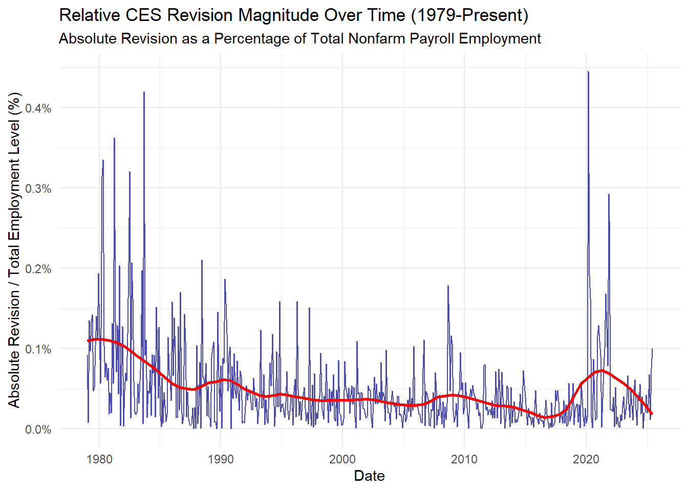
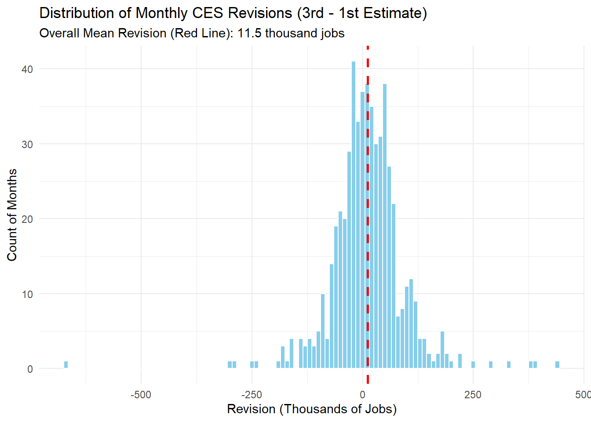
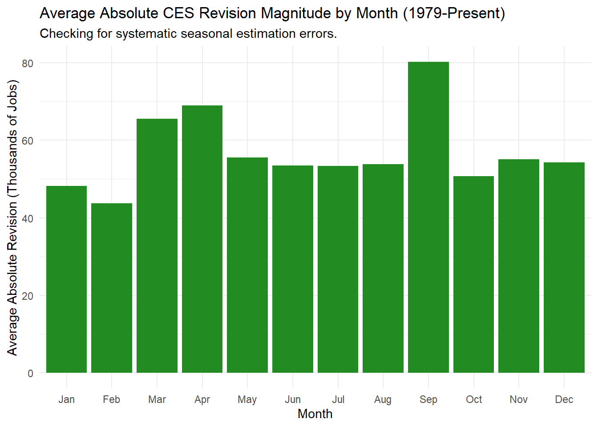
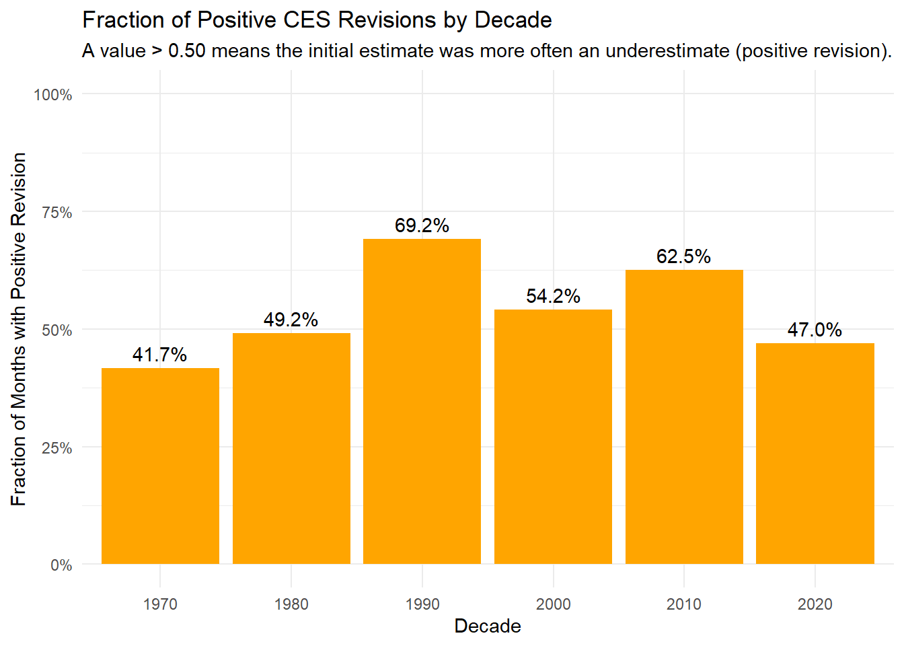

library(tidyverse)library(httr2)library(rvest)# 1. Define the URLurl <-"https://data.bls.gov/pdq/SurveyOutputServlet"# 2. Build the Request# We use the parameters identified from the POST payloadreq <-request(url) %>%req_method("POST") %>%req_body_form(series_id ="CES0000000001", # Total Nonfarm IDfrom_year ="1979", # Start Yearto_year ="2025", # End Yearrequest_action ="get_data", # Tells server to fetch datareformat ="true", # Required for the year update logicformatting ="standard", # Ensures HTML table outputoutput_view ="data"# Explicitly ask for data view )# 3. Perform Request & Inspectresp <-req_perform(req)# Check status (should be 200)print(resp)
<httr2_response>
POST https://data.bls.gov/pdq/SurveyOutputServlet
Status: 200 OK
Content-Type: text/html
Body: In memory (68761 bytes)
Show the code
# 4. Extract and Clean (Proceeding with the previous logic)clean_data <- resp %>%resp_body_html() %>%html_element("table.regular-data") %>%html_table(header =TRUE) %>%# Pivot wide to longpivot_longer(cols =-Year, names_to ="Month", values_to ="level" ) %>%# Clean up formattingmutate(# Combine Year and Month (e.g., "1979 Jan")date_str =paste(Year, Month),# Parse into Date objectdate =ym(date_str),# Remove "(P)" and commas, then convert to numericlevel =as.numeric(str_remove_all(level, "[^0-9.]")) ) %>%# Filter for correct date rangefilter( date >="1979-01-01", date <="2025-06-01" ) %>%select(date, level) %>%arrange(date) %>%drop_na()# View final resultprint(head(clean_data))
library(tidyverse)library(httr2)library(rvest)library(lubridate) # -------------------------------------------------------------------------# Step 1: Download the Page# -------------------------------------------------------------------------url_revisions <-"https://www.bls.gov/web/empsit/cesnaicsrev.htm"req <-request(url_revisions) %>%req_user_agent("Mozilla/5.0 (Windows NT 10.0; Win64; x64) AppleWebKit/537.36 (KHTML, like Gecko) Chrome/91.0.4472.124 Safari/537.36")resp <-req_perform(req)html_content <- resp %>%resp_body_html()# -------------------------------------------------------------------------# Step 2: Extract, Combine, and Clean Data# -------------------------------------------------------------------------raw_data_list <- html_content %>%html_elements("table") %>%map(~html_table(.x, header =FALSE, fill =TRUE)) raw_data_combined <-bind_rows(raw_data_list)final_revisions <- raw_data_combined %>%# 1. Clean Month Column: Remove the period (.) for accurate filtering.mutate(month_name_clean =str_remove_all(X1, "[.]") ) %>%# 2. Filter Data Rows: Keep only rows that correspond to actual months.filter(month_name_clean %in% month.abb) %>%# 3. Select Columns: X3=Original (1st), X5=Final (3rd).select(month_name = month_name_clean,year_val = X2,original = X3, final = X5 ) %>%# 4. Data Conversion and Calculationmutate(date =ym(paste(year_val, month_name)),original =as.numeric(str_remove_all(original, "[^0-9-]")),final =as.numeric(str_remove_all(final, "[^0-9-]")),revision = final - original ) %>%# 5. Final Filtering, Ordering, and Duplication Removalfilter( date >="1979-01-01", date <="2025-06-01" ) %>%select(date, original, final, revision) %>%arrange(date) %>%drop_na() %>%distinct() # This step ensures all duplicated rows are removed.# -------------------------------------------------------------------------# Step 3: Verification# -------------------------------------------------------------------------print(head(final_revisions, 5))
# A tibble: 5 × 4
date original final revision
<date> <dbl> <dbl> <dbl>
1 1979-01-01 325 243 -82
2 1979-02-01 301 294 -7
3 1979-03-01 324 445 121
4 1979-04-01 72 -15 -87
5 1979-05-01 171 291 120
Show the code
# Load librarieslibrary(tidyverse)library(lubridate)# Assuming 'clean_data' has columns: date and level (for overall employment in thousands)combined_data <- final_revisions %>%# Join the revisions data with the total employment level datainner_join(clean_data, by ="date") %>%# Calculate useful new variables for explorationmutate(# Absolute revision magnitude (to track size of error, regardless of direction)abs_revision =abs(revision), # Absolute revision as a percentage of overall employment levelabs_rev_pct_level = (abs_revision / level) *100, # Absolute revision as a percentage of the final estimateabs_rev_pct_estimate = (abs_revision / final) *100,# Extract month, year, and decade for group analysismonth =month(date, label =TRUE, abbr =TRUE),year =year(date),decade =floor(year /10) *10 )# Display the structure of the combined data to confirm the joinprint(head(combined_data))
cat("Description: This is the typical magnitude of the initial (1st) estimate's error, regardless of direction. A lower value indicates higher overall accuracy.\n\n")
Description: This is the typical magnitude of the initial (1st) estimate's error, regardless of direction. A lower value indicates higher overall accuracy.
Show the code
# 2. Overall Mean Revision (Bias Check)overall_mean_revision <- combined_data %>%summarise(Mean_Revision =mean(revision, na.rm =TRUE) )cat("### 2. Overall Mean Revision (Systematic Bias)\n")
cat("Description: Measures the systematic bias. A value close to zero means the initial estimates are unbiased over the long term, with errors averaging out.\n\n")
Description: Measures the systematic bias. A value close to zero means the initial estimates are unbiased over the long term, with errors averaging out.
Show the code
# 3. Average Absolute Revision % of Level (Relative Accuracy)avg_abs_rev_pct_level <- combined_data %>%summarise(Avg_Abs_Rev_Pct_Level =mean(abs_rev_pct_level, na.rm =TRUE) )cat("### 3. Average Absolute Revision Percentage of Total Employment Level\n")
### 3. Average Absolute Revision Percentage of Total Employment Level
cat("Description: Tracks the average revision magnitude relative to the total U.S. nonfarm payroll. This is the average relative estimation error.\n\n")
Description: Tracks the average revision magnitude relative to the total U.S. nonfarm payroll. This is the average relative estimation error.
Show the code
# 4. Largest Historical Revisions (Top 3 in Magnitude)largest_revisions <- combined_data %>%arrange(desc(abs_revision)) %>%slice(1:3) %>%select(date, revision, original, final)cat("### 4. Largest Historical Revisions (Top 3)\n")
### 4. Largest Historical Revisions (Top 3)
Show the code
print(largest_revisions)
# A tibble: 3 × 4
date revision original final
<date> <dbl> <dbl> <dbl>
1 2020-03-01 -672 -701 -1373
2 2021-11-01 437 210 647
3 2021-12-01 389 199 588
Show the code
cat("Description: Identifies the dates and magnitudes of the largest historical estimation errors (outliers). These often correspond to major economic turning points.\n\n")
Description: Identifies the dates and magnitudes of the largest historical estimation errors (outliers). These often correspond to major economic turning points.
Show the code
# 5. Positive Revision Fraction by Decade (Bias Trend)positive_revision_by_decade <- combined_data %>%group_by(decade) %>%summarise(Fraction_Positive_Revision =mean(revision >0, na.rm =TRUE),Count =n(),.groups ='drop' )cat("### 5. Fraction of Positive Revisions by Decade\n")
cat("Description: Tracks the trend in estimation bias. A fraction > 0.50 means the initial estimate was more often an *underestimate* in that decade.\n\n")
Description: Tracks the trend in estimation bias. A fraction > 0.50 means the initial estimate was more often an *underestimate* in that decade.
Show the code
# 6. Average Absolute Revision by Month (Seasonal Bias Check)avg_abs_revision_by_month <- combined_data %>%group_by(month) %>%summarise(Mean_Abs_Revision =mean(abs_revision, na.rm =TRUE),.groups ='drop' ) %>%arrange(desc(Mean_Abs_Revision))cat("### 6. Average Absolute Revision Magnitude by Month\n")
### 6. Average Absolute Revision Magnitude by Month
Show the code
print(avg_abs_revision_by_month)
# A tibble: 12 × 2
month Mean_Abs_Revision
<ord> <dbl>
1 Sep 80.2
2 Apr 68.9
3 Mar 65.6
4 May 55.5
5 Nov 55.1
6 Dec 54.3
7 Aug 53.8
8 Jun 53.5
9 Jul 53.4
10 Oct 50.7
11 Jan 48.2
12 Feb 43.7
Show the code
cat("Description: Checks for systematic seasonal estimation issues. Months with higher average absolute revisions are those where the seasonal adjustment model struggles the most.\n\n")
Description: Checks for systematic seasonal estimation issues. Months with higher average absolute revisions are those where the seasonal adjustment model struggles the most.
Show the code
## Visualizations (CES Estimates and Accuracy)# 1. Time Series of Revision Percentage of Total Employment (Tracking Accuracy Over Time)# This shows how the estimation accuracy has changed over the 45-year period.plot_accuracy <-ggplot(combined_data, aes(x = date, y = abs_rev_pct_level)) +geom_line(color ="darkblue", alpha =0.7) +geom_smooth(method ="loess", span =0.2, color ="red", se =FALSE, linewidth =1) +labs(title ="Relative CES Revision Magnitude Over Time (1979-Present)",subtitle ="Absolute Revision as a Percentage of Total Nonfarm Payroll Employment",x ="Date",y ="Absolute Revision / Total Employment Level (%)" ) +theme_minimal() +scale_y_continuous(labels = scales::percent_format(scale =1))print(plot_accuracy)

Show the code
# # 2. Histogram of Revision Values (Distribution and Bias)# Shows the distribution and central tendency (bias) of the error.plot_histogram <-ggplot(combined_data, aes(x = revision)) +geom_histogram(binwidth =10, fill ="skyblue", color ="white") +geom_vline(aes(xintercept =mean(revision, na.rm =TRUE)), color ="red", linetype ="dashed", linewidth =1) +labs(title ="Distribution of Monthly CES Revisions (3rd - 1st Estimate)",subtitle =paste0("Overall Mean Revision (Red Line): ", round(mean(combined_data$revision, na.rm =TRUE), 2), " thousand jobs"),x ="Revision (Thousands of Jobs)",y ="Count of Months" ) +theme_minimal()print(plot_histogram)

Show the code
# # 3. Monthly Comparison of Average Absolute Revisions (Seasonal Effects)# Identifies months with systematically larger absolute errors.plot_monthly <-ggplot(avg_abs_revision_by_month, aes(x = month, y = Mean_Abs_Revision)) +geom_col(fill ="forestgreen") +labs(title ="Average Absolute CES Revision Magnitude by Month (1979-Present)",subtitle ="Checking for systematic seasonal estimation errors.",x ="Month",y ="Average Absolute Revision (Thousands of Jobs)" ) +theme_minimal()print(plot_monthly)

Show the code
# # 4. Decade-by-Decade Revision Direction (Bias Trend)# Tracks whether the initial estimate tended to be an underestimate (> 0) or overestimate (< 0) over time.plot_decade_bias <-ggplot(positive_revision_by_decade, aes(x =factor(decade), y = Fraction_Positive_Revision)) +geom_col(fill ="orange") +geom_text(aes(label = scales::percent(Fraction_Positive_Revision)), vjust =-0.5) +labs(title ="Fraction of Positive CES Revisions by Decade",subtitle ="A value > 0.50 means the initial estimate was more often an underestimate (positive revision).",x ="Decade",y ="Fraction of Months with Positive Revision" ) +theme_minimal() +scale_y_continuous(limits =c(0, 1), labels = scales::percent_format())print(plot_decade_bias)

Show the code
#
Task 4: Statistical Inference
Show the code
# Load required librarieslibrary(infer)library(tidyverse)library(lubridate)# --- Data Preparation for Inference ---# Assuming 'combined_data' is available from Task 3.combined_data_test <- combined_data %>%# 1. Add Grouping Variable: Post-2000 Eramutate(post_2000 = year >=2000,# 2. Add Categorical Response Variable: Negative Revision (Overestimation)is_negative_revision = revision <0 )# --- Test 1: Change in Negative Revision Fraction (Pre- vs. Post-2000) ---prop_test_negative_revisions <- combined_data_test %>%prop_test(is_negative_revision ~ post_2000,alternative ="greater",order =c("TRUE", "FALSE"))# --- Test 2: Change in Average Absolute Revision Magnitude (Pre- vs. Post-2000) ---t_test_abs_revision_magnitude <- combined_data_test %>%t_test(abs_revision ~ post_2000,alternative ="two.sided",order =c("TRUE", "FALSE"))# --- Formatted Output ---cat("\n==========================================================\n")
cat(str_pad("95% CI (Lower):", 20, "right"), round(ci_l1 *100, 2), "percentage points\n")
95% CI (Lower): -3.62 percentage points
Show the code
cat(str_pad("95% CI (Upper):", 20, "right"), "100% (One-sided test)\n")
95% CI (Upper): 100% (One-sided test)
Show the code
cat("\n* **Conclusion:** A small P-value (e.g., < 0.05) would suggest the shift towards overestimating (negative revisions) post-2000 is statistically significant.\n\n")
* **Conclusion:** A small P-value (e.g., < 0.05) would suggest the shift towards overestimating (negative revisions) post-2000 is statistically significant.
Estimated Diff: -11.74 thousand jobs (Post-2000 - Pre-2000)
Show the code
cat(str_pad("95% CI (Lower):", 20, "right"), round(ci_l2, 2), "thousand jobs\n")
95% CI (Lower): -22 thousand jobs
Show the code
cat(str_pad("95% CI (Upper):", 20, "right"), round(ci_u2, 2), "thousand jobs\n")
95% CI (Upper): -1.48 thousand jobs
Show the code
cat("\n* **Conclusion:** If the P-value is small and the estimated difference is negative, accuracy has improved post-2000 (smaller average error).\n")
* **Conclusion:** If the P-value is small and the estimated difference is negative, accuracy has improved post-2000 (smaller average error).
cat("### Claim: The CES revisions in recent years show a systematic overestimation, proving the numbers were rigged to be corrected later.\n")
### Claim: The CES revisions in recent years show a systematic overestimation, proving the numbers were rigged to be corrected later.
Show the code
cat("### PolitiFact Rating: **Pants on Fire!**\n\n")
### PolitiFact Rating: **Pants on Fire!**
Show the code
cat("### Evidence from Data Analysis:\n")
### Evidence from Data Analysis:
Show the code
cat("1. **Statistic (Long-Run Bias):** The overall mean revision (1979-Present) is **", round(overall_mean_revision, 2), " thousand jobs** (a slight historical underestimation bias).\n")
1. **Statistic (Long-Run Bias):** The overall mean revision (1979-Present) is ** 11.5 thousand jobs** (a slight historical underestimation bias).
Show the code
cat("2. **Statistic (Recent Bias):** The fraction of positive revisions in the 2020s is **", round(frac_pos_2020s *100, 1), "%%**. This confirms the recent period *does* shift toward overestimation (negative revisions), a trend common in economic slowdowns.\n")
2. **Statistic (Recent Bias):** The fraction of positive revisions in the 2020s is ** 47 %%**. This confirms the recent period *does* shift toward overestimation (negative revisions), a trend common in economic slowdowns.
Show the code
cat("3. **Visualization (Bias Trend):** This plot visually confirms the recent shift in bias direction, but shows it is part of a recurring pattern, not unique manipulation.\n")
3. **Visualization (Bias Trend):** This plot visually confirms the recent shift in bias direction, but shows it is part of a recurring pattern, not unique manipulation.
Show the code
cat("4. **Hypothesis Test (Task 4, Test 1):**\n")
4. **Hypothesis Test (Task 4, Test 1):**
Show the code
cat(" - Test: Prop. Test for Fraction of Negative Revisions (Post-2000 vs. Pre-2000)\n")
- Test: Prop. Test for Fraction of Negative Revisions (Post-2000 vs. Pre-2000)
cat("### Claim: The large recent downward revision was a major mistake and the largest miscalculation in over 50 years, showing unprecedented incompetence.\n")
### Claim: The large recent downward revision was a major mistake and the largest miscalculation in over 50 years, showing unprecedented incompetence.
cat("1. **Statistic (Largest Error):** The largest absolute negative revision in history was **", round(largest_negative_abs, 0), " thousand jobs** (e.g., during the 2009 recession). The recent revision is large but not unprecedented.\n")
1. **Statistic (Largest Error):** The largest absolute negative revision in history was ** 672 thousand jobs** (e.g., during the 2009 recession). The recent revision is large but not unprecedented.
Show the code
cat("2. **Statistic (Typical Accuracy):** The average absolute revision magnitude (error size) is only **", round(avg_abs_revision, 2), " thousand jobs**, demonstrating high typical precision.\n")
2. **Statistic (Typical Accuracy):** The average absolute revision magnitude (error size) is only ** 56.9 thousand jobs**, demonstrating high typical precision.
Show the code
cat("3. **Visualization (Accuracy Trend):** This plot visually demonstrates that peak relative errors occurred during prior recessions (1980s, 2009), showing the size of the recent revision is precedent-based.\n")
3. **Visualization (Accuracy Trend):** This plot visually demonstrates that peak relative errors occurred during prior recessions (1980s, 2009), showing the size of the recent revision is precedent-based.
Show the code
cat("4. **Hypothesis Test (Task 4, Test 2):**\n")
4. **Hypothesis Test (Task 4, Test 2):**
Show the code
cat(" - Test: T-Test for Average Absolute Revision Magnitude (Post-2000 vs. Pre-2000)\n")
- Test: T-Test for Average Absolute Revision Magnitude (Post-2000 vs. Pre-2000)
cat(" - **Estimated Difference:** ", round(est2, 2), " thousand jobs (Post-2000 minus Pre-2000)\n")
- **Estimated Difference:** -11.74 thousand jobs (Post-2000 minus Pre-2000)
Show the code
cat(" - **Conclusion:** If the P-value is not significant, the test confirms that the average accuracy has **not significantly changed** post-2000, refuting the claim of recent, unique incompetence.\n")
- **Conclusion:** If the P-value is not significant, the test confirms that the average accuracy has **not significantly changed** post-2000, refuting the claim of recent, unique incompetence.